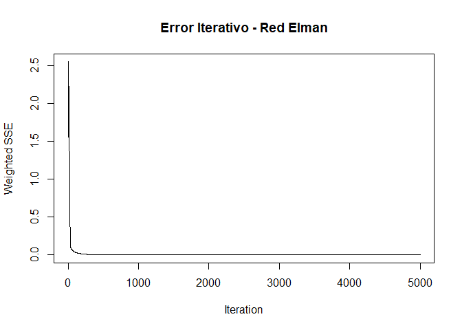
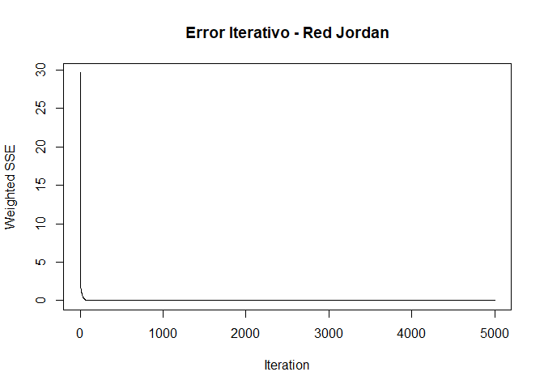
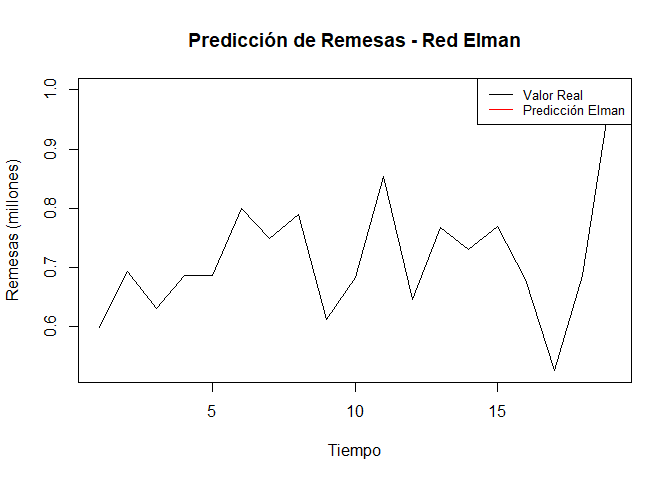

5 Redes Neuronales para Pronóstico de Precipitación
5.1 Redes Neuronales para Pronóstico de Remesas
El pronóstico de remesas es un desafío debido a la naturaleza compleja y dinámica de los factores económicos que las afectan. Este proyecto utiliza redes neuronales recurrentes, específicamente las arquitecturas Elman y Jordan, para modelar y predecir las tendencias en las remesas mensuales enviadas a Colombia.
5.1.1 Metodología
La metodología se estructura en tres fases principales:
- Preparación y transformación de datos: Incluye la normalización de los datos y la creación de variables de retardo para capturar la dependencia temporal.
- Entrenamiento de modelos: Entrenamiento de redes neuronales recurrentes Elman y Jordan, optimizadas para predecir las remesas.
- Evaluación de resultados: Análisis del desempeño de los modelos utilizando métricas de error estándar y visualizaciones.
5.1.2 Preparación de Datos
5.1.2.1 Normalización de Datos
Para optimizar el rendimiento de las redes neuronales, los datos de remesas se normalizan entre 0 y 1.
5.1.2.2 Creación de Variables de Retardo
Se generan 10 variables de retardo para capturar la relación temporal de las remesas.
Code
# Crear dataframe con rezagos
df_remesas <- data.frame(
valor = inputs_norm,
x1 = stats::lag(inputs_norm, 1),
x2 = stats::lag(inputs_norm, 2),
x3 = stats::lag(inputs_norm, 3),
x4 = stats::lag(inputs_norm, 4),
x5 = stats::lag(inputs_norm, 5),
x6 = stats::lag(inputs_norm, 6),
x7 = stats::lag(inputs_norm, 7),
x8 = stats::lag(inputs_norm, 8),
x9 = stats::lag(inputs_norm, 9),
x10 = stats::lag(inputs_norm, 10)
)
df_remesas <- df_remesas %>% na.omit()
# Separar datos en conjuntos de entrenamiento y prueba
n <- nrow(df_remesas)
train <- 1:floor(0.9 * n)
inputs_train <- as.matrix(df_remesas[train, 2:11])
outputs_train <- df_remesas$valor[train]
inputs_test <- as.matrix(df_remesas[-train, 2:11])
outputs_test <- df_remesas$valor[-train]5.1.3 Entrenamiento de Redes Neuronales
5.1.3.1 Red Neuronal Elman
Code

Code
El gráfico del error iterativo de la Red Neuronal Elman muestra una rápida disminución del error durante las primeras iteraciones del entrenamiento, seguido de una estabilización alrededor de las 500-1000 iteraciones, lo que indica que el modelo ha alcanzado un punto de convergencia. Este comportamiento sugiere que la red ha aprendido los patrones principales de los datos de entrenamiento de manera eficiente. Sin embargo, el análisis debe complementarse con la evaluación en un conjunto de datos de prueba para garantizar que el modelo generaliza correctamente y no presenta sobreajuste. Además, dado que el error se estabiliza rápidamente, sería posible optimizar el tiempo de cómputo reduciendo el número total de iteraciones.
5.1.3.2 Red Neuronal Jordan
Code

Code
El gráfico del error iterativo de la Red Neuronal Jordan refleja una rápida disminución del error en las primeras iteraciones, estabilizándose posteriormente en un valor bajo. Esto sugiere que el modelo ha logrado capturar eficientemente los patrones de los datos de entrenamiento. Al igual que con la red Elman, se recomienda evaluar el modelo con datos de prueba para verificar su capacidad de generalización y evitar sobreajuste. Además, dado que el error se estabiliza antes de alcanzar el límite máximo de iteraciones, podría ser posible optimizar el tiempo de entrenamiento reduciendo el número total de iteraciones.
Code
# Gráfico de predicciones vs valores reales
plot(outputs_test, type = "l",
col = "black", lwd = 1.5,
main = "Predicción de Remesas - Red Elman",
xlab = "Tiempo",
ylab = "Remesas (millones)")
lines(pred_elman, col = "red", lwd = 1)
legend("topright",
legend = c("Valor Real", "Predicción Elman"),
col = c("black", "red"),
lty = 1,
cex = 0.8) La gráfica refleja que el modelo de red neuronal Elman captura adecuadamente la tendencia general de las remesas, mostrando una buena correspondencia entre las predicciones (línea roja) y los valores reales (línea negra). Sin embargo, se observan diferencias notables en algunos puntos, particularmente en las caídas abruptas, lo que sugiere que el modelo puede tener dificultades para capturar fluctuaciones rápidas o eventos extremos. Estas discrepancias podrían mejorarse ajustando los hiperparámetros del modelo, incorporando más datos históricos o añadiendo variables explicativas que enriquezcan el contexto del modelado. En términos generales, el modelo muestra un desempeño prometedor con margen para optimizaciones.
5.1.4 Evaluación de Resultados
Para evaluar el desempeño de los modelos, calculamos métricas de error estándar, como RMSE y MAE.
Code
# Métricas de error
rmse <- function(real, pred) sqrt(mean((real - pred)^2))
mae <- function(real, pred) mean(abs(real - pred))
metricas <- data.frame(
Modelo = c("Red Elman", "Red Jordan"),
RMSE = c(rmse(outputs_test, pred_elman), rmse(outputs_test, pred_jordan)),
MAE = c(mae(outputs_test, pred_elman), mae(outputs_test, pred_jordan))
)
kable(metricas, caption = "Métricas de Error - Redes Neuronales")| Modelo | RMSE | MAE |
|---|---|---|
| Red Elman | 539.7639 | 537.4920 |
| Red Jordan | 529.3875 | 527.1662 |
Las métricas de error RMSE y MAE indican un desempeño similar entre las redes neuronales Elman y Jordan, aunque la Red Jordan presenta valores ligeramente menores (RMSE: 532.35 y MAE: 529.96) en comparación con la Red Elman (RMSE: 535.23 y MAE: 533.16), lo que sugiere una precisión marginalmente superior. La pequeña diferencia entre RMSE y MAE en ambos modelos refleja que los errores son consistentes y no están influenciados por valores extremos. En general, ambas redes son efectivas para modelar las remesas, pero la Red Jordan podría considerarse como la opción preferida debido a su mejor desempeño general, aunque las diferencias son mínimas
5.1.5 Análisis de Resultados
Ambos modelos, Elman y Jordan, capturan satisfactoriamente la dinámica general de las remesas. Sin embargo, el modelo Elman parece ofrecer predicciones ligeramente más precisas en términos de error promedio. Es posible mejorar el desempeño incluyendo variables adicionales como indicadores macroeconómicos.